Como emitir CAT eSocial no sistema Bevart:
Para emitir a CAT, primeiro precisamos verificar se algumas etapas de configuração já estão ok:- 1 - A empresa já tenha feito a procuração digital para seu certificado digital;
- 2 - Uma conta no sistema Bevart;
- 3 - Tenha cadastrado seu certificado digital como transmissor no sistema bevart;
Acesse o menu Painel eSocial - S2210 (CAT)
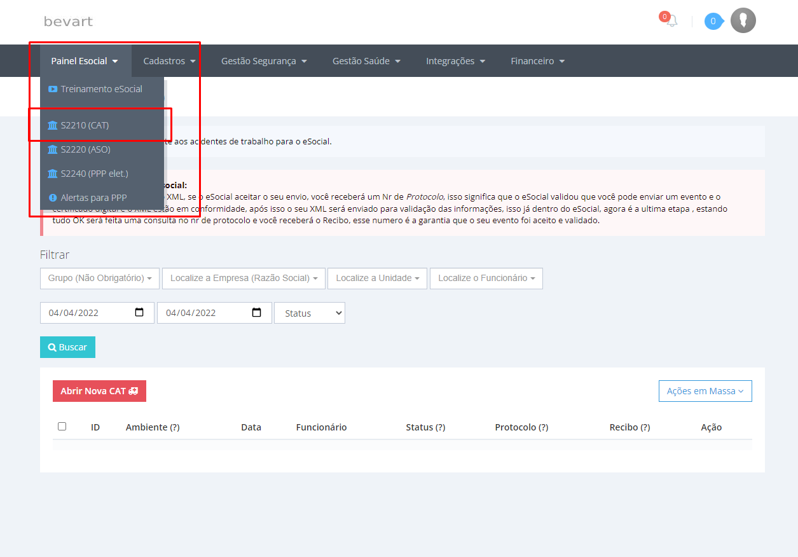Clique no botão Abrir Nova CAT
E irá abrir o formulário para preencher com as informações necessárias, o formulário está de acordo com o manual do eSocial, é simples preencher:
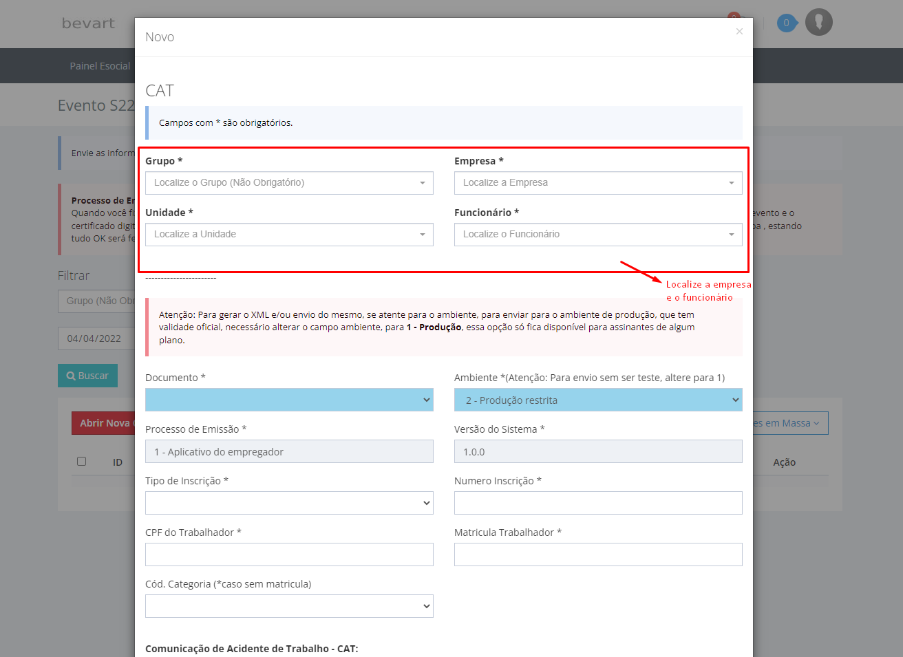Nos primeiros campos do formulário, caso não tenha cadastrado ainda a empresa, va´no menu Cadastros, e cadastre a empresa, unidade,setor,função, e funcionário.
Em Documento , é caso for o primeiro envio desse acidente, coloque original, caso precise corrigir alguma informação de uma CAT já enviada, escolha Retificação.
Em Ambiente, escolha Produção caso seja um envio oficial para o eSocial,e não um teste.
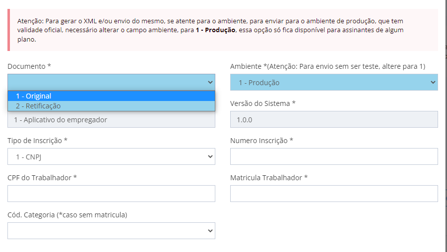Agora informações do ocorrido:
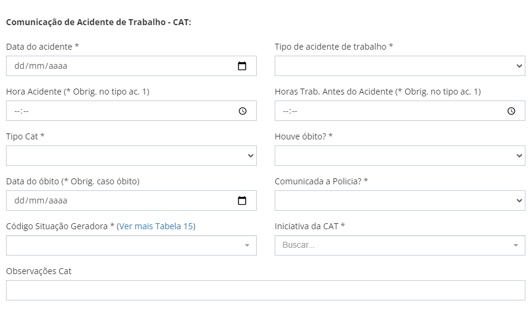Informações sobre o local do acidente:
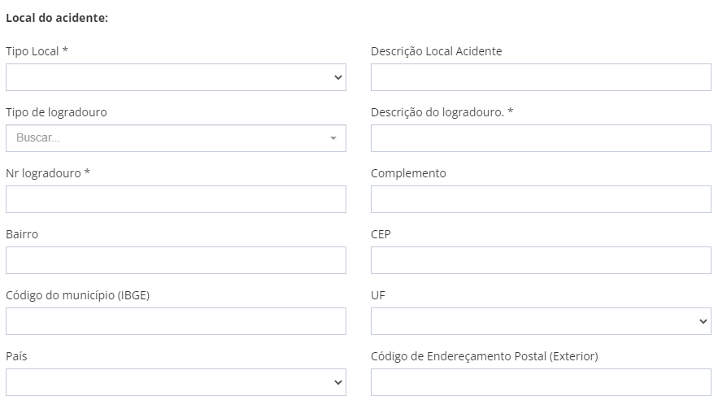Caso o local do acidente seja fora do ambiente da empresa, necessário informar o CNPJ da empresa onde ocorreu o acidente:
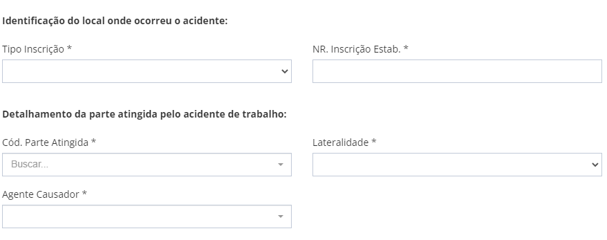Detalhes sobre a parte atingida no acidente:
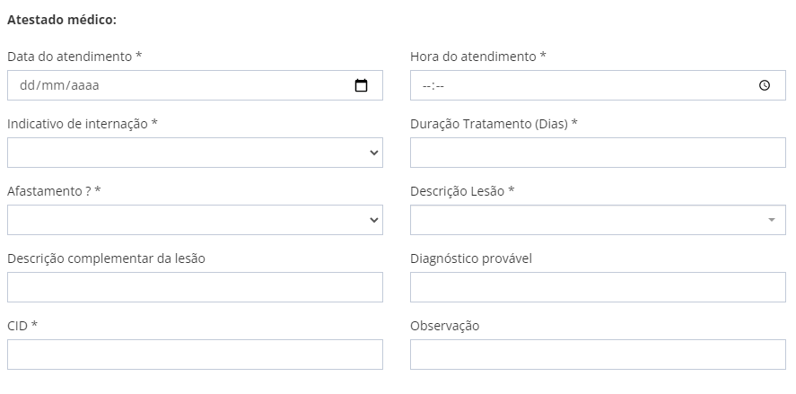Informações sobre o médico que emitiu o atestado, ele pode estar cadastrado no sistema, ou apenas preencha nos campos os dados necessários para identificar o mesmo:
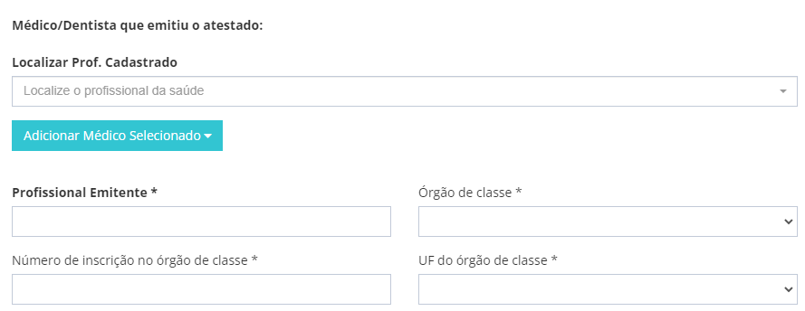Agora caso seja uma CAT que está sendo atualizada as informações, como no caso de o trabalhador vir a óbito, informar aqui o recibo da última CAT dele, assim ficará um histórico correto no eSocial sobre esse acidente:
Para enviar para o eSocial direto, selecione Salvar e enviar para o eSocial , e clique em Salvar, caso queira apenas gerar o XML da CAT, clique em Baixar XML, e poderá enviar o XML para outro enviar para o eSocial.
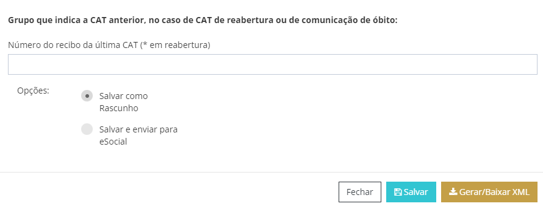Agora no painel , buscando pela empresa, ficará disponível o evento para consulta, primeiro ficará com o status de processando envio, enviado, e terá primeiramente a informação do protocolo do eSocial, isso significa que o eSocial recebeu o envelope, mas ainda não abriu, aguardamos mais um pouco e se tudo for validado com sucesso pelo eSocial, aparecerá o Status como validado, e aparecerá o recibo, esse numero de recibo é o mais importante, ele garante que o eSocial aprovou o envio, e cadastrou a CAT, agora podemos também gerar um relatório para enviar para nosso cliente, no caso de TST terceirizado, em ação, clique em Relatório CAT
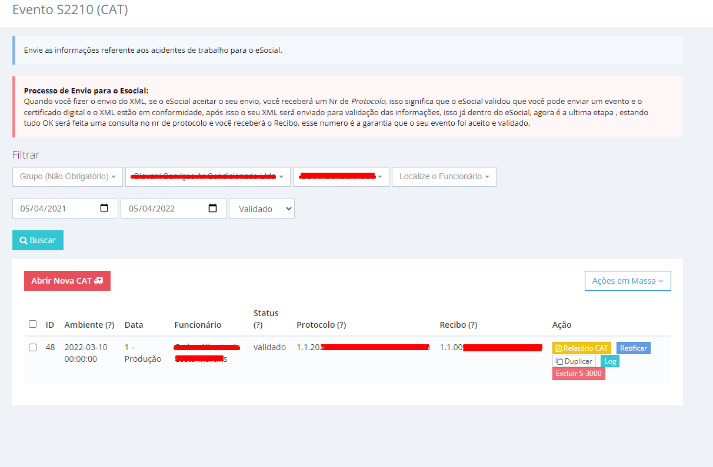Então informe o recibo (Sem os pontos), digite a captcha, e clique em Gerar relatório , pronto temos o comprovante da CAT, para enviar para nosso cliente.
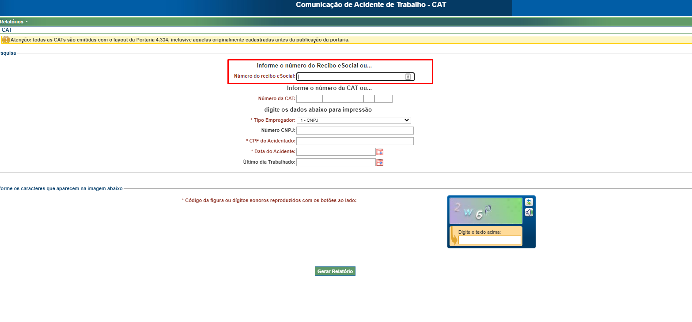Agora é mão na massa! acesse e teste grátis: bevart.com.br